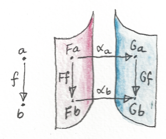

如果到现在我还没能让你相信范畴论的一切都关乎态射，那就是我没把工作做好。下一个主题是伴随，它用 Hom 集的同构来定义，因此有必要复习对 Hom 集构成要素的直觉。此外，你会看到，伴随提供了一种更一般的语言，可以描述我们以前研究过的许多构造，所以也值得顺便复习它们。
函子
首先，你确实应该把函子想成态射的映射——Haskell 对 Functor 类型类的定义强调的正是这个视角，因为它围绕 fmap 展开。当然，函子也映射对象，也就是态射的端点，否则就无法讨论保持复合。对象告诉我们哪些态射对可以复合：若要复合两支态射，一支的目标必须等于另一支的源。因此，若想把态射复合映射为提升（lifted）后态射的复合，它们端点的映射几乎也随之确定了。
交换图
态射的许多性质都用交换图表达。若一支特定态射可以通过其他态射以不止一种方式复合得到，就有了交换图。
特别是，交换图构成几乎所有泛构造的基础（始对象与终对象是显著例外）。我们在积、余积、其他各种（余）极限、指数对象、自由幺半群等定义中都见过这一点。
积是泛构造的简单例子。选取两个对象 a、b，看看是否存在对象 c 以及一对态射 p、q，使它具有作为二者之积的泛性质。

积是极限的一个特例。极限用锥定义，一般的锥由交换图构成。这些图的交换性可以由函子映射的适当自然性条件替代。这样一来，交换性就被降格为自然变换这门高级语言的汇编语言。
自然变换
一般来说，每当需要把态射映射为交换方块时，自然变换都非常方便。自然性方块相对的两条边，是某支态射 f 在两个函子 F、G 下的映射；另外两边是自然变换的分量，它们也是态射。

自然性表示：移动到“相邻”分量时（相邻是指由态射连接），不会违背范畴或函子的结构。先用自然变换的分量跨越对象间隙，再借函子跳到相邻位置，还是反过来做，都没有区别。可以说，这两个方向彼此正交：自然变换让你左右移动，函子让你上下或前后移动。可以把函子的像想成目标范畴中的一张薄片；自然变换把对应 F 的薄片映射到对应 G 的另一张薄片。

我们在 Haskell 中见过这种正交性的例子。函子的作用改变容器内容，却不改变形状；自然变换则把未经改变的内容重新包装进另一个容器。这两项操作的顺序不重要。
我们见过用自然变换替代极限定义中的锥。自然性保证每个锥的侧面交换。然而，极限仍然用锥之间的映射定义，这些映射也必须满足交换条件。（例如，积定义中的三角形必须交换。）
这些条件同样可以由自然性替代。你可能记得，泛锥，也就是极限，被定义为下面两个函子之间的自然变换。第一个是（逆变）Hom 函子：
第二个同样是逆变函子，它把 C 中对象映射到锥，而锥本身也是自然变换：
这里 Δc 是常函子，D 是定义 C 中图的函子。函子 F、G 对 C 中态射的作用都定义良好。恰好，这两个函子之间的特定自然变换还是一个同构。
自然同构
自然同构——每个分量都可逆的自然变换——是范畴论表达“两个事物相同”的方式。这样的变换的每个分量，都必须是对象之间的同构，也就是拥有逆的态射。若把函子之像想成薄片，自然同构就是两张薄片之间一一对应的可逆映射。
Hom 集
但态射是什么？它们确实比对象拥有更多结构：与对象不同，态射有两个端点。但固定源对象与目标对象后，两者之间的态射就组成一个无聊的集合（至少对局部小范畴如此）。可以给集合中的元素起名叫 f、g 来区分它们——但真正让它们不同的究竟是什么？
给定 Hom 集中的态射之间，本质区别在于它们怎样与（来自相邻 Hom 集的）其他态射复合。例如，若有态射 h，它与 f 的复合（无论前复合还是后复合）不同于与 g 的复合：
我们就能直接“观察”到 f 与 g 的区别。但即使区别无法直接观察，也可以用函子放大 Hom 集。函子 F 可能把两支态射映射成不同态射：
目标是一个更丰富的范畴，其中相邻 Hom 集提供更高分辨率，例如：
这里 h′ 不属于 F 的像。
Hom 集同构
许多范畴构造依赖 Hom 集之间的同构。但 Hom 集只是集合，它们之间的普通同构说明不了多少。对有限集合，同构只表示元素数量相同；若集合无限，则基数必须相同。然而，有意义的 Hom 集同构必须考虑复合，而复合牵涉不止一个 Hom 集。我们需要定义跨越整族 Hom 集的同构，并施加一些能与复合协同工作的兼容条件。自然（natural）同构正好满足要求。
但 Hom 集的自然同构是什么？自然性是函子之间映射的性质，不是集合之间映射的性质。所以我们真正谈论的是 Hom 集值函子之间的自然同构。这些函子不只是普通 Set 值函子；它们对态射的作用由适当的 Hom 函子诱导。Hom 函子规范地用前复合或后复合映射态射，取决于函子的协变性。
Yoneda 嵌入就是这种同构的一个例子。它把 C 中的 Hom 集映射到函子范畴中的 Hom 集，而且这个映射是自然的。Yoneda 嵌入中的一个函子是 C 中的 Hom 函子，另一个把对象映射到 Hom 函子之间的自然变换集合。
极限的定义也是 Hom 集之间的自然同构（第二个 Hom 集同样位于函子范畴）：
事实证明，指数对象或自由幺半群的构造，也可以改写成 Hom 集之间的自然同构。
这不是巧合——下一章会看到，它们只是伴随的不同例子，而伴随正是用 Hom 集的自然同构定义的。
Hom 集的不对称性
还有一个观察有助于理解伴随。Hom 集通常并不对称：C(a,b) 往往与 C(b,a) 大不相同。把偏序看作范畴，最能展示这种不对称性。在偏序中，当且仅当 a 小于等于 b，才存在从 a 到 b 的态射。若 a、b 不同，就不可能存在反方向从 b 到 a 的态射。因此，若 Hom 集 C(a,b) 非空——这里表示它是单元素集——则 C(b,a) 必为空，除非 a=b。这个范畴中的箭头具有明确的单向流动。
预序基于不一定反对称的关系，所以也“基本上”具有方向性，只是偶尔会有环。把任意范畴想成预序的推广很方便。
预序是薄范畴——全部 Hom 集要么是单元素集合，要么为空。可以把一般范畴想象成“厚”预序。
习题
- 考察自然性条件的一些退化情形，并画出相应的图。例如，如果函子 F 或 G 把 f:a→b 两端的对象 a、b 都映射到同一个对象，会发生什么，即 Fa=Fb 或 Ga=Gb？（注意，这样会得到锥或余锥。）再考虑 Fa=Ga 或 Fb=Gb 的情形。最后，若一开始就是自环态射 f:a→a，又会怎样？
点击展开参考答案
一般方块满足
Gf∘αa=αb∘Ff。若 F 在这两个对象上是常函子且把f映成恒等，则分量从共同顶点指向 G 的像，并满足Gf∘αa=αb，形成锥；若 G 局部为常函子，则分量从 F 的像指向共同顶点，形成余锥。若Fa=Ga且取αa=id，方块退化为三角形Gf=αb∘Ff；若Fb=Gb且αb=id，则为Gf∘αa=Ff。若f:a→a，方块四角只涉及Fa、Ga，自然性变成Gf∘αa=αa∘Ff：α 把两个自同态交织起来。